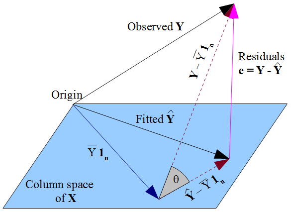

Simple Econometric Theory Review
Applied Econometrics Resources
Model Specification
For independent variables \(X_1, X_2, \dots, X_p\), and outcome variable \(Y\) for units \(i = 1, 2, \dots, n\):
\[ Y_i = \underbrace{\upbeta_0 + \upbeta_1 X_{i1} + \upbeta_2X_{i2} + \dots + \upbeta_p X_{ip}}_{\mathbb E[Y_i|X_i]} + \upvarepsilon_i \]
\(\upbeta_0, \upbeta_1, \dots, \upbeta_p\) are parameters that describe the deterministic part of the relationship between \(Y\) and \(X_1, \dots, X_p\).
- Read: the part of \(Y\) explained by \(X_1, \dots, X_p\).
\(\upvarepsilon_i\) error term is the non-deterministic relationship between \(Y\) and \(X_1, \dots, X_p\).
- Read: part of \(Y\) not explained by \(X_1, \dots, X_p\).
- \(\mathbb E[\pmb\upvarepsilon] = 0\)
Matrix Form
Condensed form:
\[ y_i = \mathbf x_i' \pmb\upbeta + \upvarepsilon_i, \quad \mathbf x_i = \begin{pmatrix} 1 \\ x_{i1} \\ x_{i2} \\ \vdots \end{pmatrix}, \quad \pmb\upbeta = \begin{pmatrix} \upbeta_0 \\ \upbeta_1 \\ \upbeta_2 \\ \vdots \end{pmatrix} \]
Even more condensed matrix form:
\[ \mathbf y = \mathbf X \pmb \upbeta + \pmb \upvarepsilon, \quad \mathbf y = \begin{pmatrix}y_1 \\ y_2 \\ \vdots \\ y_n\end{pmatrix}, \mathbf X = \begin{pmatrix} 1 & x_{11} & x_{12} & \dots & x_{1p} \\ 1 & x_{21} & x_{22} & \dots & x_{2p} \\ \vdots & \vdots & \vdots & \vdots & \vdots \\ 1 & x_{n1} & x_{n2} & \dots & x_{np} \end{pmatrix}, \pmb\upbeta = \begin{pmatrix} \upbeta_0 \\ \upbeta_1 \\ \vdots \\ \upbeta_p \end{pmatrix}, \pmb\upvarepsilon = \begin{pmatrix} \upvarepsilon_1 \\ \upvarepsilon_2 \\ \vdots \\ \upvarepsilon_n \end{pmatrix} \]
Sum of Squared Errors
Naturally, we want to choose the values \(b_0, \dots, b_p\) for the unknown \(\upbeta_0, \dots, \upbeta_p\) that minimise the sum (squared) error of predicted \(\hat Y_i\) in respect to the true population.
Actual true \(Y\) values: \(Y_i\), with unknown \(\upbeta\)
Predicted \(\hat Y\) values, with some choice of \(\upbeta\) value of \(b\).
Thus, the sum (squared) error is the sum of the differences between actual \(Y_i\) and predicted \(\hat Y_i\):
\[ SSE = \sum(Y_i - \hat Y_i)^2 = (\mathbf y- \hat{\mathbf y})'(\mathbf y- \hat{\mathbf y}) \]
Why squared?
- gets rid of direction, only keeps magnitude
- Easier for calculus as absolute value function is non-differentiable at vertex.
- Nice properties (see later in the slides).
Ordinary Least Squares
Re-arrange SSE:
\[ \begin{split} SSE & = (\mathbf y- \hat{\mathbf y})'(\mathbf y- \hat{\mathbf y}) \\ & = (\mathbf y - \mathbf{Xb})'(\mathbf y - \mathbf{Xb}) \\ & = \mathbf y' \mathbf y - \mathbf y' \mathbf{Xb} - \mathbf b' \mathbf X' \mathbf y + \mathbf b' \mathbf X' \mathbf{Xb} \end{split} \]
We want to minimise the SSE, so take the derivative in respect to \(\mathbf b\) and set equal to 0:
\[ \frac{\partial SSE}{\partial \mathbf b} = -2 \mathbf X' \mathbf y + 2 \mathbf X' \mathbf{Xb} = 0 \]
Re-arrange the equation to get
\[ \begin{split} \mathbf b & = (\mathbf X'\mathbf X)^{-1} \mathbf X'\mathbf y \\ & \implies \hat{\pmb\upbeta} = (\mathbf X'\mathbf X)^{-1} \mathbf X'\mathbf y \end{split} \]
Estimator Properties
When we estimate \(\upbeta\) (or any parameter), we typically use a sample of the population.
- What if we used a different sample to calculate the parameter? We would get a slightly different \(\hat{\upbeta}\) estimate since the sample data is slightly different.
Sampling distribution is the distribution of all estimated \(\hat{\upbeta}\) from different samples, taking an infinite number of samples.
- Imagine you take one sample, and estimate \(\hat{\upbeta}\). Then, take another sample and estimate \(\hat{\upbeta}\). Then again and again. Plot all of the \(\hat{\upbeta}\) in a distribution to get the sampling distribution.
Unbiasedness is if the expected value of the sampling distribution equals the true population value of \(\upbeta\). In other words: \(\mathbb E[\hat{\pmb\upbeta}] = \pmb\upbeta\).
Standard Error is the standard deviation of the sampling distribution.
Unbiasedness of OLS (1)
Theorem: Part of the Gauss-Markov Theorem states that under 4 conditions, the OLS estimate of \(\upbeta\) is unbiased: \(\mathbb E[\hat{\pmb\upbeta}] = \pmb\upbeta\)
The population model can be expressed as a linear model \(\mathbf y = \mathbf X \pmb\upbeta + \pmb\upvarepsilon\).
i.i.d sampling from population.
No perfect multicollinearity. Basically, \(\mathbf X\) must be full-rank.
Strict Exogeneity: Formally defined as \(\mathbb E[\pmb\upvarepsilon|\mathbf X] = 0\).
This implies that \(Cov(\upvarepsilon, X_j) = 0\) for any explanatory variable \(X_j = X_1, \dots, X_p\).
Violations of strict exogeneity often caused by omitted confounders (see causal frameworks).
Unbiasedness of OLS (2)
Proof:
\[ \begin{split} \hat{\pmb\upbeta} & = (\mathbf X'\mathbf X)^{-1} \mathbf X'\mathbf y \\ & = (\mathbf X'\mathbf X)^{-1} \mathbf X'(\mathbf X \pmb\upbeta + \pmb\upvarepsilon) \\ & = (\mathbf X'\mathbf X)^{-1} \mathbf X'\mathbf X \pmb\upbeta + (\mathbf X'\mathbf X)^{-1} \mathbf X'\pmb\upvarepsilon \\ & = \pmb\upbeta + (\mathbf X'\mathbf X)^{-1} \mathbf X'\pmb\upvarepsilon \end{split} \]
Now we want to prove \(\mathbb E[\hat{\pmb\upbeta}] = \pmb\upbeta\). So we want to take the expected value of \(\hat{\pmb\upbeta}\):
\[ \begin{split} \mathbb E[& \hat{\pmb\upbeta}|\mathbf X] = \mathbb E[\pmb\upbeta + (\mathbf X'\mathbf X)^{-1} \mathbf X'\pmb\upvarepsilon|\mathbf X] \\ & \implies \mathbb E[\hat{\pmb\upbeta}|\mathbf X] = \pmb\upbeta + (\mathbf X'\mathbf X)^{-1} \mathbf X'\mathbb E[\pmb\upvarepsilon|\mathbf X] \end{split} \]
Unbiasedness of OLS (3)
\[ \mathbb E[\hat{\pmb\upbeta}|\mathbf X] = \pmb\upbeta + (\mathbf X'\mathbf X)^{-1} \mathbf X'\mathbb E[\pmb\upvarepsilon|\mathbf X] \]
Recall Gauss-Markov condition (4), strict exogeneity: \(\mathbb E[\pmb\upvarepsilon|\mathbf X] = 0\). Thus:
\[ \mathbb E[\hat{\pmb\upbeta}|X] = \pmb\upbeta + (\mathbf X'\mathbf X)^{-1} \mathbf X'(0) = \pmb\upbeta \]
Finally, law of iterated expecations (LIE) gets us:
\[ \mathbb E [\hat{\pmb\upbeta}]= \mathbb E [\mathbb E[\hat{\pmb\upbeta}]] = \pmb\upbeta \]
Thus, we have shown \(\mathbb E[\hat{\pmb\upbeta}] = \pmb\upbeta\), proving OLS is an unbiased estimator of the true \(\upbeta\) population parameters under 4 gauss-markov conditions.
Variance of OLS (1)
Start with our solution:
\[ \begin{split} \hat{\pmb\upbeta} & = (\mathbf X'\mathbf X)^{-1} \mathbf X'\mathbf y \\ & = (\mathbf X'\mathbf X)^{-1} \mathbf X'(\mathbf X \pmb\upbeta + \pmb\upvarepsilon) \\ & = (\mathbf X'\mathbf X)^{-1} \mathbf X'\mathbf X \pmb\upbeta + (\mathbf X'\mathbf X)^{-1} \mathbf X'\pmb\upvarepsilon \\ & = \pmb\upbeta + (\mathbf X'\mathbf X)^{-1} \mathbf X'\pmb\upvarepsilon \end{split} \]
\(\pmb\upbeta\) is a constant population value, so it is not the variance. Thus, the variance of the estimator comes from 2nd term:
\[ \begin{split} Var & [\hat{\pmb\upbeta}|X]= Var[(\mathbf X'\mathbf X)^{-1} \mathbf X'\pmb\upvarepsilon| X] \\ & \implies Var[\hat{\pmb\upbeta}|X]=(\mathbf X'\mathbf X)^{-1} \mathbf X'Var[\pmb\upvarepsilon|\mathbf X] [(\mathbf X'\mathbf X)^{-1} \mathbf X'\pmb\upvarepsilon]^{-1} \\ &\implies Var[\hat{\pmb\upbeta}|X]= (\mathbf X'\mathbf X)^{-1} \mathbf X'Var[\pmb\upvarepsilon|\mathbf X] \mathbf X (\mathbf X'\mathbf X)^{-1} \end{split} \]
Variance of OLS (2)
Homoscedasticity assumption:
\[ Var[\pmb\upvarepsilon|\mathbf X] = \sigma^2 \mathbf I = \begin{pmatrix} \sigma^2 & 0 & 0 & \dots \\ 0 & \sigma^2 & 0 & \dots \\ 0 & 0 & \sigma^2 & \vdots \\ \vdots & \vdots & \dots & \ddots \end{pmatrix} \]
- Read: no matter the value of \(\mathbf X\), the error term \(\upvarepsilon\) has the same constant variance \(\sigma^2\).
If homoscedasticity assumption is true, we can plug this into our OLS variance formula:
\[ \begin{split} Var[\hat{\pmb\upbeta}|X] & = (\mathbf X'\mathbf X)^{-1} \mathbf X'Var[\pmb\upvarepsilon|\mathbf X] \mathbf X (\mathbf X'\mathbf X)^{-1} \\ & = (\mathbf X'\mathbf X)^{-1} \mathbf X'\sigma^2 \mathbf I \mathbf X (\mathbf X'\mathbf X)^{-1} \\ & = \sigma^2 (\mathbf X' \mathbf X)^{-1} \end{split} \]
Variance of OLS (3)
Alternatively, we can weaken this assumption to heteroscedasticity: where the error term variance depends on unit \(i\)’s \(\mathbf X\) values:
\[ Var[\pmb\upvarepsilon|\mathbf X] = \sigma^2 \mathbf I = \begin{pmatrix} \sigma^2_1 & 0 & 0 & \dots \\ 0 & \sigma^2_2 & 0 & \dots \\ 0 & 0 & \sigma^2_i & \vdots \\ \vdots & \vdots & \dots & \ddots \end{pmatrix} \]
Our variance of OLS once plugging in is:
\[ Var[\hat{\pmb\upbeta}|X]= (\mathbf X'\mathbf X)^{-1} \mathbf X' \begin{pmatrix} \sigma^2_1 & 0 & 0 & \dots \\ 0 & \sigma^2_2 & 0 & \dots \\ 0 & 0 & \sigma^2_i & \vdots \\ \vdots & \vdots & \dots & \ddots \end{pmatrix} \mathbf X (\mathbf X'\mathbf X)^{-1} \]
Hypothesis Testing
We do not know the values of \(\sigma^2\) or \(\sigma_i^2\). Thus, we use estimates of them involving our residuals \(\hat{\upvarepsilon}_i\).
Using these estimates, we can find the estimated variance and standard error. From this, we can conduct hypothesis testing with \(t\)-tests.
\[ t = \frac{\hat{\upbeta}_j - H_0}{\widehat{se}(\hat{\upbeta}_j)}, \quad \text{for} \quad \hat{\upbeta}_j \in \hat{\upbeta}_0, \dots, \hat{\upbeta}_p \]
- Where \(H_0\) is the null (usually 0).
We can then calculate p-value: probability the null is true given our estimate \(\hat{\upbeta}_j\).
Note: hypothesis testing is only approximate if \(\upvarepsilon\) is not normally distributed (will be achieved in large sample sizes due to CLM). Consider bootstrap inference for small samples.
Geometrics of OLS (1)
Our predicted values of \(\hat Y_i\) are defined as following:
\[ \hat{\mathbf y} = \mathbf{Xb} = \mathbf X(\mathbf X'\mathbf X)^{-1} \mathbf X'\mathbf y \]
Let us define projection matrix \(\mathbf P\) as:
\[ \mathbf P:= \mathbf X(\mathbf X'\mathbf X)^{-1} \mathbf X' \]
- \(\mathbf P\) is symmetrical \(\mathbf P' - \mathbf P\), and idempotent \(\mathbf{PP} = \mathbf P\).
Thus, we can rewrite our predicted values as:
\[ \hat{\mathbf y} = \mathbf{Py} \]
Thus, \(\mathbf P\) is projecting \(\mathbf y \rightarrow \hat{\mathbf y}\).
Geometrics of OLS (2)
Let us define residual maker matrix \(\mathbf M\):
\[ \mathbf M:= \mathbf I - \mathbf P = \mathbf I - \mathbf X(\mathbf X'\mathbf X)^{-1} \mathbf X' \]
\(\mathbf M\) is also symmetrical and idempotent.
\(\mathbf M\) is orthogonal to \(\mathbf P\) and \(\mathbf X\), meaning \(\mathbf{PX} = \mathbf{MX} = 0\). You can prove this on your own, it is pretty simple.
Our error between \(Y_i\) and \(\hat Y_i\) is \(\hat{\upvarepsilon}_i\):
\[ \begin{split} \hat{\pmb\upvarepsilon} & = \mathbf y - \hat{\mathbf y} = \mathbf y - \mathbf{Py} \\ & = (\mathbf I - \mathbf P) \mathbf y \\ & = \mathbf{My} \end{split} \]
Thus, \(\mathbf M\) is projecting \(\mathbf y \rightarrow \hat{\pmb\upvarepsilon}\).
Geometrics of OLS (3)
We know that predicted \(\hat{\mathbf y}\) is some linear combination of \(\mathbf X\) (explanatory variables \(X_1, \dots, X_p\)), since \(\hat{\mathbf y} = \mathbf{Xb}\).
Thus, \(\mathbf P\) projects \(\mathbf y\) into a vector \(\hat{\mathbf y}\) that is in a space spanned by \(\mathbf X\) (column space of \(\mathbf X)\).

\(\mathbf M\) projects vector \(\mathbf y\) into vector \(\mathbf e\) (error), which is perpendicular to the column space of \(\mathbf X\).
- Read: strict exogeneity: error term should not be correlated with \(\mathbf X\).